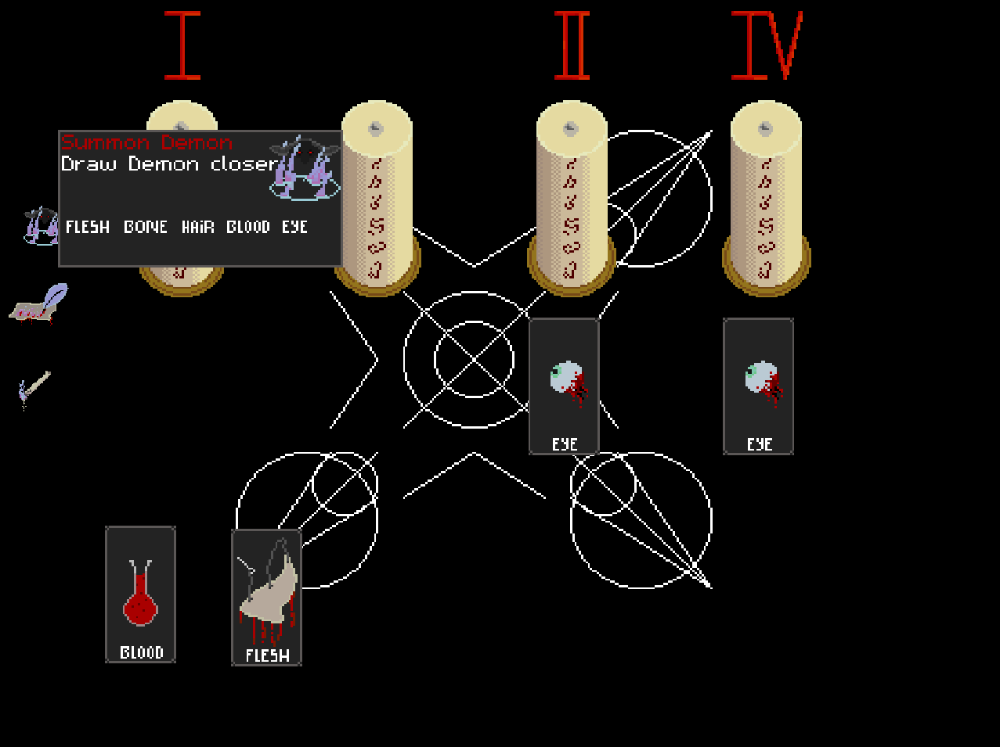

I decided to write my new game Summoners Table without an engine, just C++ with OpenGL.
In this series of blog posts I will talk about the development process.

NOTE: (read this if you want to know
how
OpenGL
works. But it's not
a requirement for understanding what I
talk about here)
Over time I've worked myself into a habit of using engines to help make the games I work on (see a recent project here). But recently, even though I enjoy using engines I've been feeling an urge to create something from scratch! So it's time to get back to basics.
Summoner's Table is a card game, where you try to summon a demon without letting your candles go out.
At a very basic level, this means that I want 2D Sprites that I can move
around the screen. There will be a Spritesheet that I will want to import and pass to the graphics card, and
there are going to be lots animations happening e.g. changing colour/position/scale/UVcoords etc
...
I'm choosing OpenGL for the graphics (I want the ability to program neat hardware accelerated effects and
stuff) and SDL2 for handling cross platform widow creation/ input and sound.
SDL2 is great when you need to handle game related platform dependent stuff that would otherwise be bit of a pain to roll yourself.
In this blog post, I'm going to talk about the animation system, as It's something that I've always enjoyed having
access to in game engines, and I want to prove that writing this stuff yourself really doesn't have to be
that hard.
First of all a note on the style of C++ I'm going to be writing.
The way I like to start building out a game project is to have everything global. I might use a pointer to a game
struct that I pass around to every function, but the effect is the same. When you're writing a game, you have to be flexible and open to change,
as a lot of the time, you don't know what mechanics are going to work until you try them. Sometimes,
the game you end up creating is completely different from the game you thought you were going to make.
The thing is when you don't know what the end product will look like, you want to avoid adding abstractions that you think are sensible now, but that you will
have to spend time ripping out later. After all
no abstraction is better than the wrong abstraction.
Saying that, I am going to be talking about the abstractions that, as the development of Summoner's Table has progressed, I have found useful, as I think the
patterns that I use here really apply to general game programming.
Also, I'm not te biggest fan of classes, I prefer to write structs whenever I can. Besides, I don't really have
much use for the C++ RAII stuff here anyway, since (and as you will see) I will tend not to have to release
the memory that I allocate as I can just reuse it later. There are very few other resources that I have
to care about releasing/destroying besides our one texture, some music, and a few shader files.
Another benefit of using classes are class hierarchies. I don't plan on using them for this game, as
in C++, when you refer to something and you don't know it's size (as its polymorphic, and you just know that it's an Entity of some kind), you have to use a pointer. So if you want an array
of abstract polymorphic "Entities" each element in that array will have to be a pointer to a random location on the heap.
This really wont have very nice cache behaviour if all we want to do is loop through them.
//Entity is some abstract class
std::vector<Entity*> entities;
//Not great cache behaviour
for(Entity *e : entities) {
e->x ++;
e->y ++;
}
Also, the way we are going to want to lay things out in memory requires us to be a little "flexible" with our abstractions too. OpenGL is an API with which you can talk to your graphics card. As such, it wants to receive data (vertices, textures, matrices) in Buffers that we map from RAM to VRAM (graphics card memory). We are going to want to do things like storing vertices for things we want to render at the same time, together in one buffer.
Anyway, let's get to some code, I'm largely going to omit the OpenGL specific code here as it's really not what this post is about, if you want to learn about it I recommend https://learnopengl.com/ most of the beginner stuff there is pretty good (if a little out of date, but itl get ya goin). let's setup something for sprite rendering. I want to be able to do something like this:
render(cardSprites);
render(candleSprites);
render(smokeSprites);
(I've not put any thought at all into Struct packing/alignment for the purpose of this blog post, sorry about that - if you have no idea what I'm talking about then you might find this article very interesting)
struct SpriteClass {
SpriteMaterial material;
std::vector<GLfloat> Buffer_vertexOffsetData;
std::vector<GLfloat> Buffer_textureOffsetData;
std::vector<GLfloat> Buffer_tintValueData;
std::vector<GLfloat> Buffer_scaleValueData;
bool BufferRefreshFlag_vertexOffsetData;
bool BufferRefreshFlag_textureOffsetData;
bool BufferRefreshFlag_tintValueData;
bool BufferRefreshFlag_scaleValueData;
std::vector<SpriteAnimation> scaleAnimations;
float defaultScale{ 1.0f };
};
A nice feature of most engines, is the ability to animate things like color, scale and position and I want to be able to quickly fire off animations for stuff like that. This is why there is a vector of "scale animations" here. I've not included position or colour animations because at the moment my animation system can only really handle 1-dimensional interpolations, and I've not needed to animate any actual movement or colour changes yet. Which is part of a broader point actually, only write what you need to get the thing you want to make on the screen. We're not writing a game engine here, we're writing a game, and that's an important distinction.
There's a field here that I won't get in to too much detail about, and that's the ' SpriteMaterial material;'. This Struct holds OpenGL specific data about which shader program to use when rendering, and how to actually draw the vertices in VRAM.
Anyway! I promised you an animation system, and an animation system I will deliver! We're making a card game, so let's look at the Struct for a Card:
struct Sprite {
int BufferIndex_vertexOffsetData;
int BufferIndex_textureOffsetData;
int BufferIndex_tintValueData;
int BufferIndex_scaleValueData;
IndexReference scaleAnimationReference;
};
struct Card {
int number;
Suit suit;
bool deleted;
int generation;
bool mouseIsHovering{ false };
Sprite sprite;
};
One field on the Sprite that I would like you to ignore right now is the IndexReference scaleAnimationReference. What this does will become clearer in the next section.
Let's have a look at the code that adds animations:
struct IndexReference {
int generation;
int index;
};
struct SpriteAnimation {
FloatAnimation floatAnimation;
int generation;
IndexReference gameObjectReference;
};
IndexReference addScaleAnimation(SpriteClass& spriteClass, IndexReference gameObjectReference, FloatAnimation floatAnimation) {
// if a slot is available (a completed animation is hanging around) reuse it for the new animation
for (int i = 0; i < spriteClass.scaleAnimations.size(); i++) {
if (!spriteClass.scaleAnimations[i].floatAnimation.done) {
continue;
}
spriteClass.scaleAnimations[i].floatAnimation = floatAnimation;
spriteClass.scaleAnimations[i].generation++;
spriteClass.scaleAnimations[i].gameObjectReference = gameObjectReference;
IndexReference animationReference;
animationReference.generation = spriteClass.scaleAnimations[i].generation;
animationReference.index = i;
return animationReference;
}
// no pre-existing animation slot is available, so add a new one
SpriteAnimation spriteAnimation;
spriteAnimation.floatAnimation = floatAnimation;
spriteAnimation.gameObjectReference = gameObjectReference;
spriteAnimation.generation = 0;
IndexReference reference;
reference.generation = spriteAnimation.generation;
reference.index = spriteClass.scaleAnimations.size();
spriteClass.scaleAnimations.push_back(spriteAnimation);
return reference;
}
Cards, Animations and other things are all held in vectors (again ... the C++ STL kind), vectors that I would prefer not to have to shrink. The way this will work is that when when we want to delete game object, we will set it's bool deleted flag to true. When we next need to add a game object of that type, we will loop through existing game objects looking for one marked as deleted, and replace it with the new one at the same index.
Cards will get deleted from the game and other cards will get added all the time. Animations will exist for a fraction of a second and then be replaced with other animations. So we need an effective way to refer to a thing, given that it might be gone and something else might exist in its place.
IndexReference is a generational index. Each game object, will have an integer representing its "generation", if a game object gets marked for deletion and another thing replaces it, it's generation counter gets incremented. So in order to refer to something, we need two pieces of data, the index where it's stored in the vector, and the value of its generation when it was created. If we later on try to refer to an object that has been replaced, the generation counter will not match the one we have in the reference, and we will know that the thing we are referencing doesn't exist anymore.
An elegant solution right? Notice that instead of an integer index, we could have used a pointer here, but that would have made the IndexReference struct more complicated. We would either have had to declare the pointer type as void since we don't know what kind of object we want it to point to, or we would have had to use unique_pointer<T> where T is parameterized in a template<typename T>. That's just a whole lot more complicated that it needs to be. The only thing we gain from that is the ability not to care what vector the thing is stored in. But then if you know the game object's type, you also know what vector it's in.
On to the SpriteAnimation struct. This contains a floatAnimation, which just keeps track of the interpolated values and whether or not the animation has completed. an IndexReference referring to the gameObject which is being animated, and also a generation int. The generation counter is needed because the animation will be stored in a vector and it will need to be referred too.
The function addScaleAnimation simply loops through the animations on a SpriteClass Struct, looking for ones marked as done, if it finds one, it replaces it with the new animation (and increments the generation counter), if not, then a new animation (with a generation of 0) is added and the size of the vector is increased.
So what about the code that actually changes the values each tick?
template<typename T>
void resolveScaleAnimations(SpriteClass& spriteClass, std::vector<T>& spriteObjects, float gameTime) {
for (int i = 0; i < spriteClass.scaleAnimations.size(); i++) {
// if the animation has completed, then skip it
if (spriteClass.scaleAnimations[i].floatAnimation.done) {
continue;
}
int spriteIndex = spriteClass.scaleAnimations[i].spriteIndex;
int scaleValueBufferIndex = spriteObjects[spriteIndex].sprite.BufferIndex_scaleValueData;
// here we actually set the new scale value
spriteClass.Buffer_scaleValueData[scaleValueBufferIndex] = getCurrentAnimationValue(spriteClass.scaleAnimations[i].floatAnimation, gameTime);
spriteClass.BufferRefreshFlag_scaleValueData = true;
}
}
for each scale animation in the sprite class that has not completed, we get the referenced game object, from which we get the location of it's scale data in the SpriteClass's scale data vector. We set the scale value at that index to the result of a call to getCurrentAnimationValue and voila.
If you're a little confused, this might help. This is how I call the function to update card scale animations:
// technically we don't need <Card> here as the compiler infers type T from the type of game.cards
resolveScaleAnimations<Card>(game.cardSpriteClass, game.cards, game.gameTime);
One more thing, I'm aware that there are libraries like Boost that handle the kind of "object pooling" that I implement myself here. But for this project I wanted to be a little lean and just do things myself :) Also for the sake of this blog post, I think its nice to arrive at an abstraction organically, rather than dive straight in with a managed solution.
If you would like to talk to me about game development or C++ (or maybe you just want to correct me on something that i've got wrong here) please email me at joesgamesbitnbyes@gmail.com